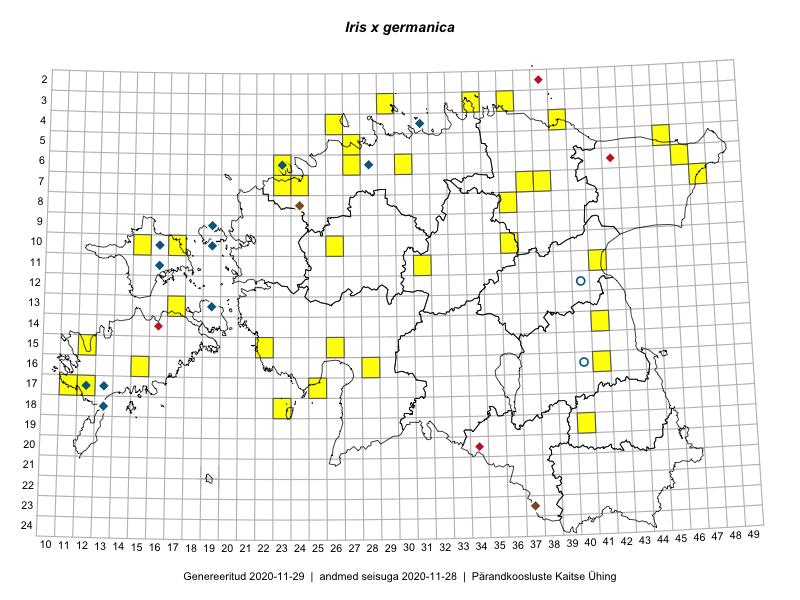

Iris ×germanica — aediiris
Iridaceae :: Iris germanica L. (61)

Kaart põhineb 63 kirjel:
vaatlusi 57
herbaareksemplare 4
PKÜ kirjeid1 1
ELFi kirjeid2 1
Taime kaasaegsed ja ajaloolised leiukohad asuvad 40 ruudus.
Tingmärgid ja ruutude arvud periooditi (U3 / V4 )
█ 2006–2020 (32/–)
◆/◇ 1971–2005 (7/14)
○ 1921–1970 (2/0)
+ kuni 1920 (0/0)
× hävinud (–/0)
? kaheldav (–/0)
| Ruut | Leidja(d) | Leiuaeg | Kirje |
|---|---|---|---|
| 13-19 | M. Reitalu | 1993–1995 | ruut/ala: Iris germanica L. |
| 17-12 | M. Reitalu | 1971 | ruut/ala: Iris germanica L. |
| 04-31 | Thea Kull | 2000-08-02 | ruut/ala: Iris germanica L. |
| 10-19 | Toomas Kukk, Elle Roosaluste, Mare Leis, Thea Kull | 1993-06–1998-09-21 | ruut/ala: Iris germanica L. |
| 09-19 | Toomas Kukk, Elle Roosaluste, Mare Leis, Thea Kull | 1993-07-06–1998-09-22 | ruut/ala: Iris germanica L. |
| 10-17 | Toomas Kukk, Eerik Leibak | 2015-08-12 | ruut/ala: Iris germanica L. |
| 10-17 | Toomas Kukk, Eerik Leibak | 2015-08-12 | ruut/ala: Iris germanica L. |
| 05-45 | Tiit Hallikma, Toomas Kukk | 2015-07-21 | ruut/ala: Iris germanica L. |
| 05-45 | Tiit Hallikma, Toomas Kukk | 2015-07-21 | ruut/ala: Iris germanica L. |
| 06-46 | Toomas Kukk, Eerik Leibak | 2015-04-25 | ruut/ala: Iris germanica L. |
| 06-46 | Toomas Kukk, Eerik Leibak | 2015-04-25 | ruut/ala: Iris germanica L. |
| 10-15 | Toomas Kukk, Peedu Saar | 2015-05-28 | ruut/ala: Iris germanica L. |
| 03-34 | Rein Kalamees, Kersti Püssa | 2015-08-23 | ruut/ala: Iris germanica L. |
| 03-34 | Rein Kalamees, Kersti Püssa | 2015-08-23 | ruut/ala: Iris germanica L. |
| 18-23 | Ott Luuk, Elle Roosaluste | 2015-05-29 | ruut/ala: Iris germanica L. |
| 07-47 | Thea Kull, Eerik Leibak | 2015-07-21 | ruut/ala: Iris germanica L. |
| 07-47 | Thea Kull, Eerik Leibak | 2015-07-21 | ruut/ala: Iris germanica L. |
| 11-31 | Ott Luuk, Toivo Sepp | 2015-05-18 | ruut/ala: Iris germanica L. |
| 15-22 | Vilma Kuusk, Indrek Tammekänd | 2015-06-30 | ruut/ala: Iris germanica L. |
| 17-12 | Mari Reitalu | 2015-07-02 | ruut/ala: Iris germanica L. |
| 17-12 | Mari Reitalu | 2015-07-02 | ruut/ala: Iris germanica L. |
| 16-41 | Karin Kikas, Elle Rajandu | 2015-04-23 | ruut/ala: Iris germanica L. |
| 14-41 | Karin Kikas, Elle Rajandu | 2015-05-18 | ruut/ala: Iris germanica L. |
| 14-41 | Karin Kikas, Elle Rajandu | 2015-05-18 | ruut/ala: Iris germanica L. |
| 11-41 | Maret Gerz, Meeli Mesipuu | 2015-05-14 | ruut/ala: Iris germanica L. |
| 16-15 | Elle Rajandu, Karin Kikas | 2015-07-20 | ruut/ala: Iris germanica L. |
| 06-23 | Mari Metsoja, Jaak-Albert Metsoja, Ott Luuk | 2015-06-04 | ruut/ala: Iris germanica L. |
| 10-26 | Jaak-Albert Metsoja, Ott Luuk, Maret Gerz | 2014-06-11 | ruut/ala: Iris germanica L. |
| 03-29 | Tiina Elvisto | 2015-05-04 | ruut/ala: Iris germanica L. |
| 19-40 | Toomas Kukk, Tiit Hallikma, Johannes Kõdar | 2016-06-13 | ruut/ala: Iris germanica L. |
| 19-40 | Tiit Hallikma, Toomas Kukk | 2016-06-13 | ruut/ala: Iris germanica L. |
| 07-38 | Liina Oja, Eerik Leibak | 2016-07-28 | ruut/ala: Iris germanica L. |
| 08-36 | Ott Luuk | 2016-08-11 | ruut/ala: Iris germanica L. |
| 07-38 | Liina Oja, Eerik Leibak | 2016-07-28 | ruut/ala: Iris germanica L. |
| 17-25 | Tiit Hallikma, Tõnu Ploompuu | 2016-07-06 | ruut/ala: Iris germanica L. |
| 17-25 | Tiit Hallikma, Tõnu Ploompuu | 2016-07-06 | ruut/ala: Iris germanica L. |
| 05-27 | Kadi-Liis Kesler | 2015-05-30 | ruut/ala: Iris germanica L. |
| 03-29 | Kadi-Liis Kesler, Maria Ksenofontov | 2015-07-20 | ruut/ala: Iris germanica L. |
| 06-30 | Kadi-Liis Kesler, Tiina Elvisto | 2015-05-26 | ruut/ala: Iris germanica L. |
| 03-34 | Hannes Pehlak, Toomas Kukk | 2016-07-26 | ruut/ala: Iris germanica L. |
| 04-39 | Hannes Pehlak, Toomas Kukk, Susanna Vain | 2016-07-28 | ruut/ala: Iris germanica L. |
| 06-23 | Jaak-Albert Metsoja, Mari Metsoja, Ott Luuk | 2015-06-04 | ruut/ala: Iris germanica L. |
| 17-11 | Mari Reitalu | 2007-07-05 | ruut/ala: Iris germanica L. |
| 03-29 | Tiina Elvisto | 2015-05-04 | ruut/ala: Iris germanica L. |
| 15-12 | Mari Reitalu | 2007-04-26–2007-07-10 | ruut/ala: Iris germanica L. |
| 06-30 | Kadi-Liis Kesler, Tiina Elvisto | 2015-05-26 | ruut/ala: Iris germanica L. |
| 05-27 | Kadi-Liis Kesler | 2015-05-30 | ruut/ala: Iris germanica L. |
| 03-29 | Kadi-Liis Kesler, Maria Ksenofontov | 2015-07-20 | ruut/ala: Iris germanica L. |
| 03-29 | Kadi-Liis Kesler, Maria Ksenofontov | 2015-07-20 | ruut/ala: Iris germanica L. |
| 03-36 | Rein Kalamees, Kersti Püssa | 2017-05-18 | ruut/ala: Iris germanica L. |
| 07-23 | Mari Reitalu, Indrek Tammekänd | 2017-08-10 | ruut/ala: Iris germanica L. |
| 03-29 | Toomas Kukk | 2017-09-29 | ruut/ala: Iris germanica L. |
| 04-26 | Ott Luuk | 2017-07-20 | ruut/ala: Iris germanica L. |
| 15-26 | Indrek Tammekänd | 2019-06-05 | ruut/ala: Iris germanica L. |
| 07-23 | Mari Reitalu, Indrek Tammekänd | 2017-08-10 | ruut/ala: Iris germanica L. |
| 07-37 | Ott Luuk, Peedu Saar | 2019-06-12 | ruut/ala: Iris germanica L. |
| 10-36 | Ott Luuk, Peedu Saar | 2019-06-12 | ruut/ala: Iris germanica L. |
| 16-40 | Agnes Ojaveer | 1960-06-12 | TAA0055770: Iris germanica L. |
| 16-40 | A. Ojaveer | 1961-06-09 | TAA0055771: Iris germanica L. |
| 16-40 | A. Ojaveer | 1961-06-09 | TAA0055772: Iris germanica L. |
| 12-40 | M. Kask | 1967-06-07 | TAA0055773: Iris germanica L. |
| 23-37 | Pille Tomson, Eerik Leibak | 2001-06-10 | ELF: 1919 |
| 08-24 | 2000-09-22 | PKÜ: 5789 |
Pärandkoosluste Kaitse Ühingu (PKÜ) andmebaas sisaldab inventeeritud koosluste kirjeldusi ja liigiloendeid. Kõige enam on andmeid niidutaimede kohta.↩︎
Eestimaa Looduse Fondi (ELF) andmebaas sisaldab inventeeritud koosluste kirjeldusi ja liigiloendeid. Eriti rohkesti on andmeid märgalade kohta.↩︎
Ruutude arv uue atlase andmekogu järgi. Muuhulgas arvestab vanemat herbaariumi, 2005. aasta atlase välitöölehtedelt uuesti digitaliseeritud andmeid jne. Uue atlase andmekogust pärinevad andmed on kaardile kantud siniste sümbolitega.↩︎
Ruutude arv 2005. aasta atlase (Kukk, T., Kull, T., Eesti taimede levikuatlas. Eesti Maaülikool, Põllumajandus- ja Keskkonnainstituut, Tartu, 2005) järgi. Andmeallikana on kasutatud levik.exe programmi, kus igas ruudus on registreeritud vaid uusim leid. Seetõttu on vanemate perioodide kohta andmed puudulikud. Kasutatud levik.exe andmestikus leidub mõningaid kõrvalekaldeid atlase trükis ilmunud versioonist, sagedamini tarnade ja käpaliste seas. Lisaks leidub selles andmestikus valik liike (peamiselt väheste leidudega tulnuktaimed), mille kaarte trükis ei avaldatud. Vana atlase andmed ruutudest, milles ei ole uue atlase andmekogus leide enne 2006. aastat, on kaardil esitatud punaste sümbolitega. Vana atlase andmetel hävinud ja kaheldavaid leiukohti pole hilisemate (taas)leidude põhjal korrigeeritud.↩︎